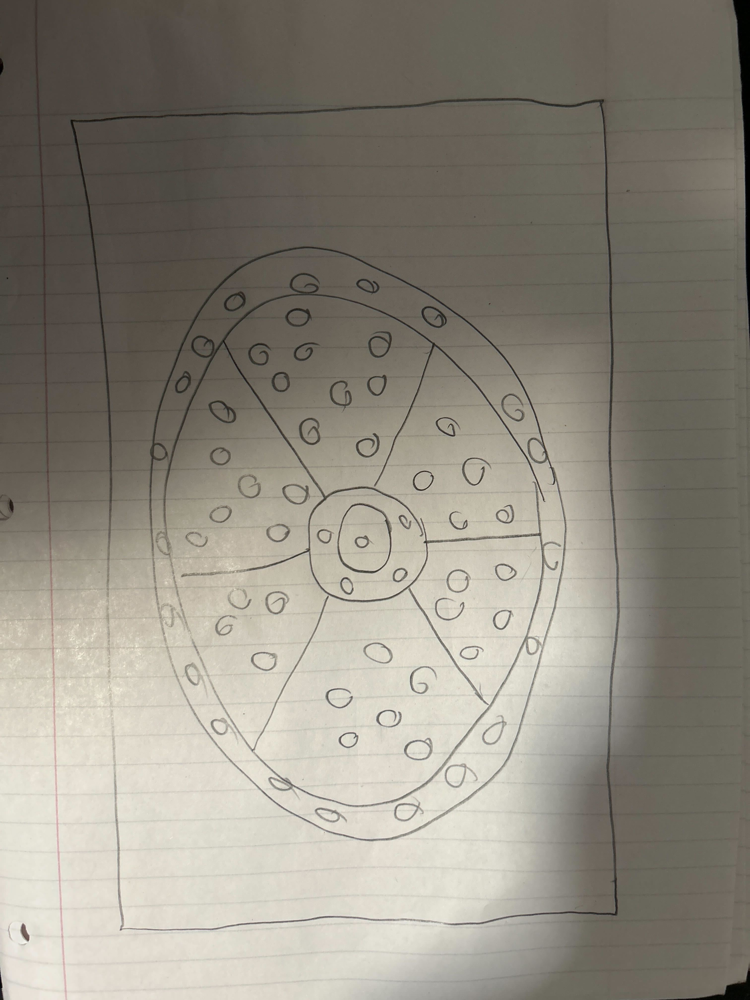
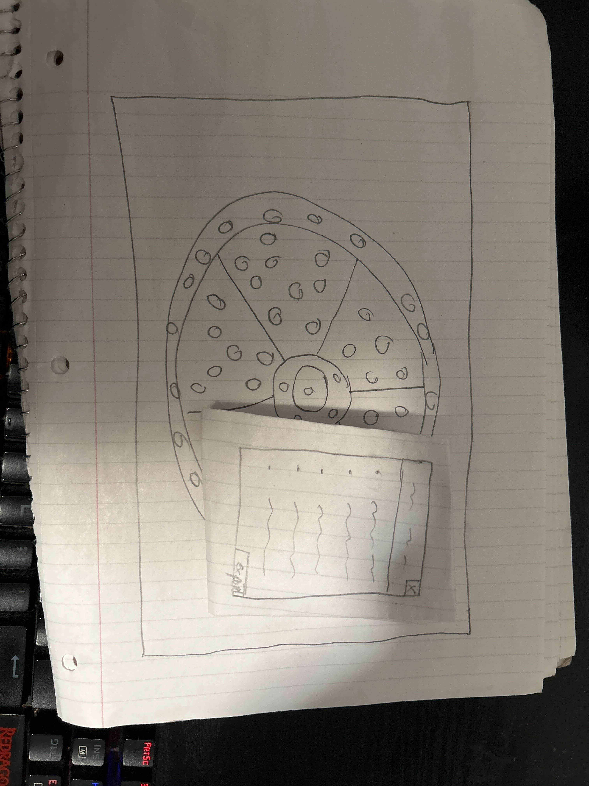
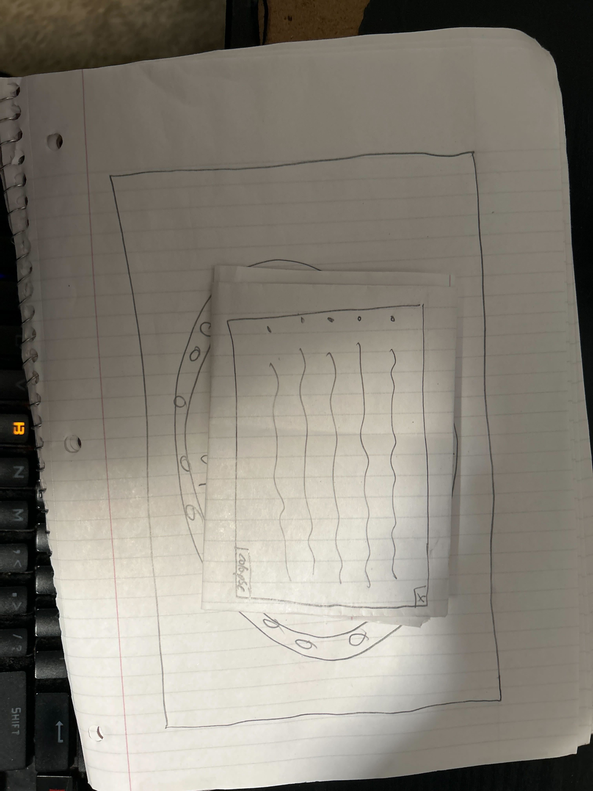

I learned about how people would interact with my website through the paper Prototypes. I had to consider how much information to give and what the user would want to see. I also had to consider how minimalist to be with user interactions.
  